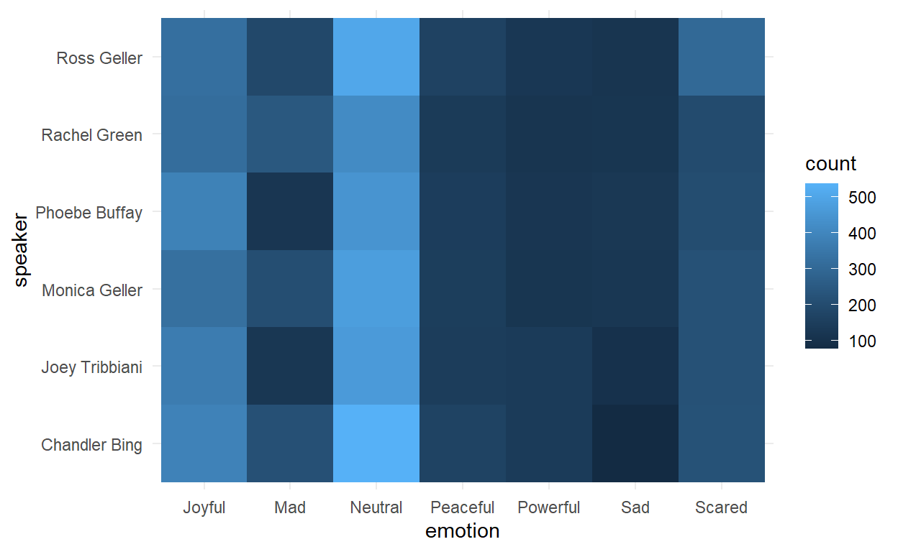

Tidy Tuesday: 18 August 2020
This week’s data can be found here. It is datasets containing scripts from the classic TV sitcom Friends.
friends <- readr::read_csv('https://raw.githubusercontent.com/rfordatascience/tidytuesday/master/data/2020/2020-09-08/friends.csv')
friends_emotions <- readr::read_csv('https://raw.githubusercontent.com/rfordatascience/tidytuesday/master/data/2020/2020-09-08/friends_emotions.csv')
friends_em <- dplyr::left_join(friends, friends_emotions, by = c('season', 'episode', 'scene', 'utterance')) %>%
dplyr::mutate(utt_id = paste(season, episode, scene, utterance, sep = '_'))This data allows us to see which utterances were which emotion, out of these:
unique(friends_em$emotion)
[1] NA "Mad" "Neutral" "Joyful" "Scared" "Sad"
[7] "Powerful" "Peaceful"
friends_em %>%
dplyr::filter(speaker %in% c('Ross Geller', 'Rachel Green', 'Phoebe Buffay',
'Monica Geller', 'Joey Tribbiani', 'Chandler Bing')) %>%
dplyr::filter(!is.na(emotion)) %>%
ggplot(aes(x = emotion, y = speaker))+
geom_bin2d()+
theme_minimal()
However, these are the explicit ‘emotion’ labels that the script provides. Can we see, season-to-season, how words used for each of the characters change? I’m using the word embeddings pipeline from Julia Silge’s Why R Webinar.
Season embeddings
Let’s start at the very beginning; it’s a very good place to start. Let’s calculate the word vectors for just season 1.
First, we have to turn the sentence-length utterances into word-by-word tokens using the tidytext package. We use the combined season, episode, scene, and utterance code as the utterance ID.
We can take this opportunity to filter out really uncommon words, and really short words like ‘I’.
tidy_utts <- friends_em %>%
dplyr::filter(season == 1) %>%
dplyr::select(utt_id, text) %>%
tidytext::unnest_tokens(word, text) %>%
dplyr::group_by(word) %>%
dplyr::filter(dplyr::n() >= 50 & nchar(word) > 1) %>%
dplyr::ungroup()
head(tidy_utts)
# A tibble: 6 x 2
utt_id word
<chr> <chr>
1 1_1_1_1 there's
2 1_1_1_1 nothing
3 1_1_1_1 to
4 1_1_1_1 tell
5 1_1_1_1 he's
6 1_1_1_1 just Then, for each utterance ID we can combine all the words used into a column of nested tibbles, named ‘words’.
nested_utts <- tidy_utts %>%
tidyr::nest(words = c(word))Julia’s approach to word embeddings is understanding words by the company they keep: we create skipgrams, and understand the probability of each word following a set of other words.
This function allows us to calculate those sliding windows to find which other words tend to appear in the vicinity of a particular word.
The window size is not specified. Julia suggests that a window size of 3-4 captures word meaning, whereas a size of 10 or so captures its more general domain. We don’t have enough data to make the window size too small, so we’ll stick with the broader domain picture.
slide_windows <- function(tbl, window_size){
skipgrams <- slider::slide(
tbl, ~.x, .after = window_size - 1, .step = 1, .complete = TRUE
)
safe_mutate <- purrr::safely(dplyr::mutate)
out <- purrr::map2(skipgrams, 1:length(skipgrams), ~ safe_mutate(.x, window_id = .y))
out %>%
purrr::transpose() %>%
purrr::pluck("result") %>%
purrr::compact() %>%
dplyr::bind_rows()
}
window_size <- 10After calculating these windows, we have to find a good metric of ‘associated-ness’.
Point-wise mutual information (PMI) calculates an association between how often words occur on their own and how often words occur together with other words.
Calculated as the logarithm of the probability of finding two words together, normalized for the probability of finding each of the words alone.
utts_pmi <- nested_utts %>%
dplyr::mutate(words = purrr::map(words, slide_windows, window_size)) %>%
tidyr::unnest(words) %>%
tidyr::unite(window_id, utt_id, window_id) %>%
widyr::pairwise_pmi(word, window_id)The widyr package provides a singular value decomposition function, which lets us calculate a set number of vectors (dimensions) in this feature space. We calculate 100, but we’ll only look at a few.
season_1 <- utts_pmi %>%
widyr::widely_svd(item1, item2, pmi, nv = 100, maxit = 1000)To understand what these embeddings have encoded, we can look at what words are most similar to words we understand.
In our case, I want to understand how the names of our main characters are encoded: which words are most associated with these names?
Julia provides a function for doing this:
nearest_neighbors <- function(df, token) {
df %>%
widyr::widely(~ . %*% (.[token, ]),
sort = TRUE,
maximum_size = NULL)(item1, dimension, value) %>%
dplyr::select(-item2)
}For example: what words tend to co-occur with Phoebe?
head(nearest_neighbors(season_1, 'phoebe'))
# A tibble: 6 x 2
item1 value
<chr> <dbl>
1 phoebe 0.520
2 door 0.111
3 yes 0.0932
4 wait 0.0826
5 chandler 0.0792
6 big 0.0767To get a more rounded view of the embeddings, we can also visualise the embeddings directly. These are the first 8 dimensions, depicting which words are most strongly embedded in each of the dimensions. Our dataset was on the small side, but this approach has still managed to automatically detect a dimension of names (without knowing what verbs, nouns, or names are)!
It’s also quite amusing to see “c’mon please” as a phrase embedded directly into a feature space dimension.
season_1 %>%
dplyr::filter(dimension <= 8) %>%
dplyr::group_by(dimension) %>%
dplyr::top_n(12, abs(value)) %>%
dplyr::ungroup() %>%
ggplot(aes(value, item1, fill = as.factor(dimension))) +
geom_col(show.legend = FALSE) +
facet_wrap(~dimension, scales = "free_y", ncol = 4)+
theme_minimal()+
labs(x = 'PMI',
y = 'Word')
To now get a different season’s vectors, we can combine all the prior steps into a single function. I already set window size above.
utts_vectors <- function(season_select, window_size = window_size){
print(season_select)
# Unnest tokens
tidy_utts <- friends_em %>%
dplyr::filter(season == season_select) %>%
dplyr::select(utt_id, text) %>%
tidytext::unnest_tokens(word, text) %>%
dplyr::group_by(word) %>%
dplyr::filter(dplyr::n() >= 50 & nchar(word) > 1) %>%
dplyr::ungroup()
# Nest words by utterance
nested_utts <- tidy_utts %>%
tidyr::nest(words = c(word))
# Calculate PMI
utts_pmi <- nested_utts %>%
dplyr::mutate(words = purrr::map(words, slide_windows, window_size)) %>%
tidyr::unnest(words) %>%
tidyr::unite(window_id, utt_id, window_id) %>%
widyr::pairwise_pmi(word, window_id)
# Calculate word vectors through singular value decomposition
utts_vectors <- utts_pmi %>%
widyr::widely_svd(item1, item2, pmi, nv = 100, maxit = 1000) %>%
dplyr::mutate(season = season_select)
return(utts_vectors)
}Let’s calculate the final season’s word embeddings.
season_10 <- utts_vectors(season_select = 10, window_size)
[1] 10How have the words associated with our main characters changed? Let’s calculate a tidy dataset to show us the top 10 words associated with each name in season 1 and season 10.
names <- c('ross', 'rachel', 'monica', 'joey', 'phoebe', 'chandler')
nearest <- function(name){
s1 <- dplyr::top_n(nearest_neighbors(season_1, name), 10)
s10 <- dplyr::top_n(nearest_neighbors(season_10, name), 10)
all <- dplyr::full_join(s1, s10, by = 'item1') %>%
dplyr::transmute(item1,
s1 = value.x,
s10 = value.y,
name = name)
}
compare_names <- purrr::map_dfr(names, nearest) %>%
tidyr::pivot_longer(cols = s1:s10,
names_to = 'season',
values_to = 'pmi')A visualisation shows that the associated words are completely different between the seasons. The only stable association is between each character and themselves. There are some interesting insights: whereas Monica was associated with Ross in season 1, she’s associated with Joey instead in season 10. Phoebe is still waiting, and Monica is still doing things ‘again’.
compare_names %>%
ggplot(aes(x = season,
y = forcats::fct_reorder(item1, pmi),
fill = pmi))+
geom_bin2d(colour = 'grey')+
facet_wrap(~name, scales = 'free_y')+
scale_fill_continuous(na.value = 'white')+
theme_minimal()+
labs(x = 'Season', y = 'Associated word')
So clearly, these embeddings are not stable over time. But even within just the words associated with each character in season 10, do their embeddings change season-to-season? To find out, we have to calculate the word embeddings for each season separately, and put them all together in a dataframe.
all_seasons <- purrr::map_dfr(1:10, utts_vectors, window_size)
[1] 1
[1] 2
[1] 3
[1] 4
[1] 5
[1] 6
[1] 7
[1] 8
[1] 9
[1] 10To visualise, we first extract the Season 10 words most associatd with each character. We then visualise their PMI scores for each dimension and season.
The visualisation shows more-or-less stable embeddings for most words; however, Rachel’s is most erratic, and Ross’ embeddings diverge at various points throughout the seasons. This may point to more varied character arcs, especially towards the later seasons.
s10_nearest <- function(name){
dplyr::top_n(nearest_neighbors(season_10, name), 10) %>%
dplyr::mutate(name = name)
}
s10_n <- purrr::map_dfr(names, s10_nearest)
rel_words <- all_seasons %>%
dplyr::filter(item1 %in% s10_n$item1 & dimension <= 4) %>%
unique(.) %>%
dplyr::full_join(s10_n, by = 'item1')
ggplot(rel_words, aes(x = as.factor(season), y = value.x, colour = item1, group = item1))+
geom_line()+
geom_point(alpha = 0.8)+
facet_wrap(dimension~name, nrow = 4)+
theme_minimal()+
theme(legend.position = 'none')+
labs(title = 'Word PMI over time',
subtitle = 'Embedding of words associated with each character in S10. \nNumber refers to embedding dimension',
x = 'Season',
y = 'PMI')
However, main takeaway remains: to create robust, stable embeddings, you’re going to need a very large corpus and a very good laptop to run it all (mine couldn’t do more than one or two seasons’ worth of text at a time)!